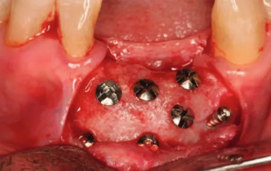
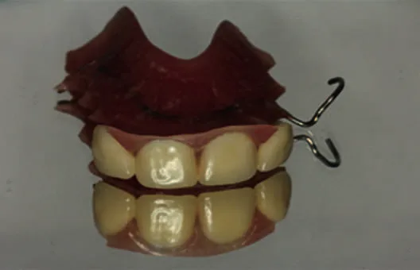

نسخه استخراجشده؛ ترجمه یا تأیید علمی انجام نشده است. وضعیت: captured
در یونیت GBR خواندی که ممبران بدون پشتیبان فرو میریزد. اینجا عوارض هر پشتیبان را میبینی.
۱. پیچ چادری. کارکردش در دو جمله تعریف میشود:
• «پیچهای چادری برای تثبیت ممبران به کار میروند تا کانتور مطلوب به دست آید.»
• «پیچهای تثبیت استخوان برای تعریف توپوگرافی ریج استخوانی مورد نظر پیش از قرار دادن مواد پیوند به کار میروند.»
به ترتیب زمانی دقت کن: پیش از قرار دادن ماده. یعنی اول شکل نهایی را تعریف میکنی، بعد فضا را پر میکنی — نه برعکس.
و عارضهاش: «سر باریک تمایل دارد وقتی ممبران زیر کشش قرار میگیرد، راه خود را از میان آن باز کند.» — همان مسئلهی سرِ پیچ که در GBR دیدی. پس سر پیچ باید پهن و صاف باشد تا ممبران را نگه دارد و مخاط رویش را نساید؛ قطر رایج پیچ تثبیت ۱٫۵ میلیمتر است و سرش هرچه پهنتر، بهتر.
۲. مش تیتانیوم. تصویرش را ببین: «اکسپوز این مش تیتانیوم که با عفونت محل پیوند پیچیده شده است».
ترکیب اکسپوز + عفونت بدترین حالت است. مش تیتانیوم وقتی لبهی تیزش از میان فلپ راه باز کند بهآسانی اکسپوز میشود؛ مش اکسپوزشده را میتوان تا پایان ترمیم نگه داشت، ولی رشد پیوند اغلب آسیب میبیند. پیشگیری: همهی اجزای حفظ فضا (مش، ممبران غیرقابلجذب، پیچ چادری) باید بیلبهی تیز باشند.
۳. ممبران تقویتشده با تیتانیوم. مزیتش روشن است: «پشتیبانی استراتهای تیتانیومی از فروریختن ممبران در نقص حین فرآیند ترمیم جلوگیری میکند.»
و قاعدهی جایگذاریاش عددی است: «ممبرانهای تقویتشده با تیتانیوم با لبههایی که ۲ میلیمتر از ریشههای مجاور فاصله دارند قرار میگیرند، تا اتصال درست بافت نرم اطراف ریشهی مجاور ممکن شود.»
به دلیلش دقت کن: نه برای پرهیز از آسیب ریشه، بلکه برای اینکه بافت نرم بتواند به ریشه بچسبد. اگر ممبران آن فضا را اشغال کند، بافت جایی برای اتصال ندارد. این قاعدهی ۲ میلیمتری مال ممبران غیرقابلجذب و مش تیتانیوم است؛ ممبران جذبشونده را در بیشتر موارد میتوان مستقیم کنار ریشه گذاشت.
و انتخاب ممبران بر پایهی نقص: دربارهی یک مورد بالینی: «این نقص نیازمند بازسازی پلیت باکال ازدسترفته است و ممبران غیرقابلجذب برای حفظ فضا به کار خواهد رفت.»
یعنی وقتی دیوارهای وجود ندارد که فضا را نگه دارد، ممبران باید خودش این کار را بکند — و ممبران جذبی بدون پشتیبان از عهدهاش برنمیآید.
و تثبیت لینگوال: «تثبیت ممبران با بخیه در سمت لینگوال» با روش تکگذاری در پلیت کورتیکال پالاتال انجام میشود: «تک در پلیت کورتیکال پالاتال گذاشته میشود و بخیه از میان فلپ پالاتال شروع میشود، از زیر فلپ میگذرد و دوباره از میان ممبران بازمیگردد.» هدف این است که اگر خط برش باز شد یا پروتز موقت پیوند را جابهجا کرد، ممبران تکان نخورد؛ تکگذاری در سمت لینگوال از نظر دسترسی دشوار است و بخیهی لینگوال یا پالاتال آن را جبران میکند.

این بخش را جدی بگیر، چون عارضهای را توصیف میکند که پس از رفتن بیمار از مطب اتفاق میافتد و تو آن را نمیبینی.
تصویری از «پیچ تثبیت با تحلیل استخوان همراه» را در نظر بگیر؛ علتش روشن است: «ناشی از پروتز موقتی که با برجستگی خود روی گرافت فشار وارد میکند.»
و در فهرست علتهای اکسپوز ممبران هم دیدی: «نبود بستهشدن بدون کشش و فشار از پروتز موقت به اکسپوز ممبران انجامیده است.»
پس پروتز موقت در دو عارضهی جداگانه نقش دارد: تحلیل استخوان اطراف پیچ و اکسپوز ممبران.
راهحل: «پروتز موقت اصلاحشده تا فلنج فاسیال نداشته باشد.»
ساده و قاطع: فلنج فاسیال حذف میشود، چون دقیقاً همان بخشی است که روی محل پیوند مینشیند. بهتر است تا حد امکان پروتز متحرک ندهی؛ اگر لازم است، همهی فلنجهای باکال را بردار و با رست اکلوزال و تکیه بر سطح لینگوال دندانهای مجاور، نیرو را از محل پیوند دور کن. اسیکس برای دهانههای کوتاه گزینهای موقت است.
و توجه کن این یک تصمیم فعال است، نه یک اتفاق. پروتز موقتی که بدون اصلاح تحویل بیمار داده شود، ماهها روی محل پیوند فشار وارد میکند — و در ویزیت بعدی، تو فقط نتیجه را میبینی نه علت را.
سرِ پیچهای اکسپوزشده — عارضه یا نه؟
«سرِ پیچهای تثبیت اغلب از میان مخاط نازکی که محل گرافت در حال ترمیم را میپوشاند دیده میشوند.» این عارضه نیست و درمان خاصی نمیخواهد.
اکسپوز واقعی فرق دارد: سر پیچ از مخاط بیرون زده است. «سرِ پیچهای اکسپوزشده باید با شستوشوی کلرهگزیدین تا ترمیم بافت اطراف نگهداری شوند.» در پیوند ذرهای، پیچ پس از آن برداشته میشود تا راه آلودگی در کنار تنهی پیچ بسته شود؛ در بلاک گرافت، برداشتن پیچ ممکن است کل گرافت را از دست بدهد، پس پیچ با نگهداری حفظ میشود. و هرگز نکوش روی پیچ اکسپوزشده را با جابهجا کردن بافت نرم بپوشانی.
و یک تکنیک بافت نرم برای پایدار کردن نتیجه، پس از کاشت ایمپلنت در محل بازسازیشده: «یک نوار باریک بافت پالاتال اتوژن روی این ناحیهی اپیکال بخیه میشود تا نوار محافظی از بافت کراتینیزه ساخته شود که حرکت بازگشتی مخاط را روی ناحیهی پوششدادهشده محدود میکند.»
مسئلهای که این حل میکند ظریف است: پس از پیوند، مخاط تمایل دارد به موقعیت قبلی خود برگردد و نوار کراتینیزه مثل یک لنگر جلوی این بازگشت را میگیرد.
و معیار نهایی ارزیابی حجم: «حجم استخوانی که باید در یک پروسیجر ممبران ایزوله شود» باید از پیش مشخص باشد — و «ریج پس از عمل با عرض اضافهشده» معیار موفقیت است.
و در سمت دیگر، مسئلهی «حجم ناکافی استخوان» مطرح است؛ یادت باشد که تحلیل عمودی شدید نیازمند بازسازی است تا از مشکلات پشتیبانی، زیبایی و ترمیم ضعیف جلوگیری شود.
و یک گزینهی کمتر شناختهشده، وقتی کانال نازوپالاتین در مسیر استئوتومی ایمپلنت قدامی ماگزیلا است (استئوتومیای که به کانال راه پیدا کند، به نفوذ بافت عصبی و فیبروزی و شکست اینتگریشن میانجامد): «ابلیتراسیون و پیوند کانال نازوپالاتین» که میتواند در فراهم کردن حجم استخوانی قابلتوجه برای کاشت ایمپلنت کمک کند.
